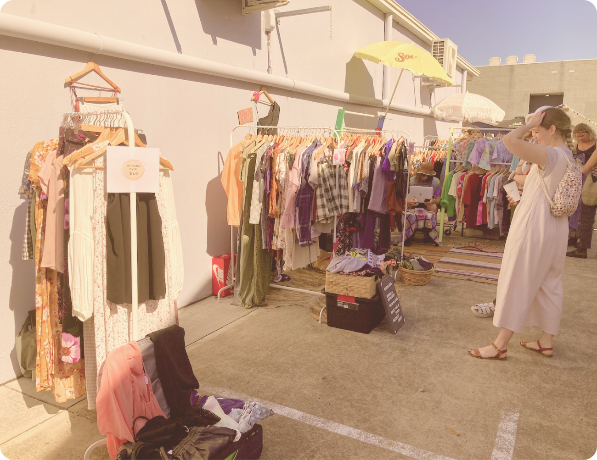

Franco Markets are a bi-monthly vintage and pre-loved clothing market that also features handmade products from local artisans. Held at the back of Capulet & Co there is also great coffee and bread!
Franco Markets are a trip down memory lane with fashions from the sixties through to the eighties being especially popular and sort after.
The markets draw a diverse crowd from Gen Z through to Baby Boomers. It’s a great place to hang out together, your kids will love hearing the stories behind all the fashions.
If you’ve held onto some of your own favourite clothing from your twenties and want to see it living and being loved again, anyone can set up a stall by registering with Franco Markets for a small fee.
Many of the stall holders are regulars and take the time to set up beautiful displays, like Gin Rummy Vintage. It’s a delight to look through and reminisce over the beautiful seventies fashion!
You can also purchase beautifully aranged, fresh flowers from Ella.dot. Her bouquets have a really dreamy, nostalgic quality that will have you remembering simpler days.
Thinking about the future for the grandkids, it’s time to cut back on unnecessary packaging. Etc Body has sustainable, plastic free and natural soaps and body products to help bring about a brighter future.
There’s also the occasional mid century decor treasure to be found. From mirrors and rugs to the occasional plant stand. Millennials are going crazy over mid century design and all things seventies. You get the cool points of being able to say you loved it first.
There’s also plenty of space to sit back and enjoy a coffee or a cold drink and take in the market and everyone going by.
And there’s always live music to keep you entertained with local artists of all ages adding to the chilled out vibe.